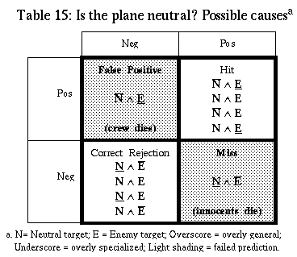

Table of Contents
Table of Contents
 Previous Chapter
Previous Chapter
Table of Contents
Previous Chapter
For failure to occur, the learning system must be associated with some performance task. In the simplest case, the task may be attribute prediction or classification. For example, when a decision tree misclassifies an instance, ID3 (Quinlan, 1986) uses the instance for learning. In general, a failure-driven approach to learning and reasoning concentrates on contradictions, impasses, false expectations, surprises, and unexpected successes during the performance task to indicate when attention is warranted.
Many systems invest too much computational overhead in evaluating examples that, in ordinary performance situations, provide few or no useful opportunities to learn. For example, PRODIGY (Minton, 1990) has no input bias. As a consequence, it learns from every input and then must delete useless knowledge. Alternatively, desJardins' (1992) PAGODA uses a given input's expected utility of predicting features in the environment to filter input examples. Like Meta-AQUA, the system uses a goal-directed learning approach to formulate a set of learning goals that direct and guide the system's learning. However, Meta-AQUA uses an explanation of the system's own failure to generate these goals, while PAGODA uses the expected utility of the input. But it is more tractable to let failure feedback from the environment filter the input for useful candidates for goal formulation, rather than calculating the utility of all instances, because fewer instances exist on which to perform computation. Moreover, learning will be simpler in the remaining examples because, as will be shown below, fewer degrees of freedom generally exist for blame assignment when learning from failure than for credit assignment when learning from success.
To illustrate the utility of failure-driven bias, consider the following.(2) During the Persian Gulf oil embargo of Iran, a tragic event occurred that resulted in the death of innocent civilians. The USS Vincennes shot down an Iranian commercial airliner after an engagement with Iranian gunboats on July 3, 1988. On the basis of conflicting information, the captain of the Vincennes mistook the airliner for an enemy F-14 fighter aircraft and ordered it shot down. Although the incident was controversial, an official investigation concluded that the captain acted in a proper manner given the rules of engagement and the circumstances under which the captain made such a decision.
Instead of this incident being simply a negative example of the category F-14, let us propose three classifiers: one represents the concept "friendly target," another recognizes "neutral targets," and a third classifies "enemy targets." Let us also assume for the sake of simplicity that the friendly-target concept returns negative because of no electronic signature. The remaining two concepts return a value and a confidence level. The captain's quandary stems from the low confidence returned by the positive identification from the enemy classifier, along with an equally low confidence for the negative classification of neutral aircraft. Given no noise in the data and that an unambiguous result occurs (no possibility of both true or both negative), Table 15 summarizes the possible explanations for answers to the question "Is the reported plane neutral?"
Table 15. Is the plane neutral? Possible causes

In both failed cases (the shaded cells: false positive and miss), there is only one possibility. If, as in the actual incident, there is a miss (i.e., the actual answer is positive but the expected outcome is negative), then the concept of neutral plane must be overly specialized, since it rejects a positive example; whereas the concept of enemy plane must be overly general since it accepts a negative example. Blame assignment for the converse case, that of a false positive, is equally unambiguous. If the concept of neutral plane mistakenly recognizes an example of an enemy target, then it must be overly general; and at the same time, if the classifier of enemy planes rejects the same example, then the concept must be overly specialized.
In successful examples of performance, many more degrees of freedom exist with which to do credit assignment. In positive identifications of neutral aircraft, in which the neutral classifier returns true and the enemy classifier returns false, both classifiers may still be incorrect in general. That is, although a neutral classifier may be overly general, it can still return true on all positive examples. Likewise, the enemy classifier can be overly specialized and still reject all negative examples. Simply because a particular target is correctly identified, we do not have much information as to the classifier's overall performance. In the case of correct rejection, an overly specialized neutral classifier may still reject a particular enemy aircraft, and even though the enemy classifier may properly accept a particular enemy example, it may still be overly general and succeed. Success gives little information as opposed to failure.
Failure-driven input bias is limited, however. Although failure may constrain learning, some systems may not be able to use this fact because a particular inductive policy (the strategy used to make bias choices based on the underlying assumptions of the domain) may influence a learning system toward certain results (Provost & Buchanan, 1992). Provost and Buchanan show that inductive policies can bias a learner toward speed of acquisition rather than accuracy (when time is a limited resource, for example) or toward accuracy instead of speed (when safety is a high priority). Likewise, in the Vincennes scenario, even though failure may facilitate learning, life-critical tasks require that the performance system not choose a course that results in failed examples. The approach of LEX (Mitchell, Utgoff, & Banerji, 1983), which generates learning examples on the basis of their expected utility, irrespective of any inductive policy, is unacceptable. The crew of the Vincennes strove for hits and correct rejections despite the fact that much could be learned from examples like the unfortunate incident (miss) that did occur. The consequences of both false positives and misses require an inductive policy that biases the performance system toward accuracy and away from learning optimization.
Table of Contents
 Next Chapter
Next Chapter